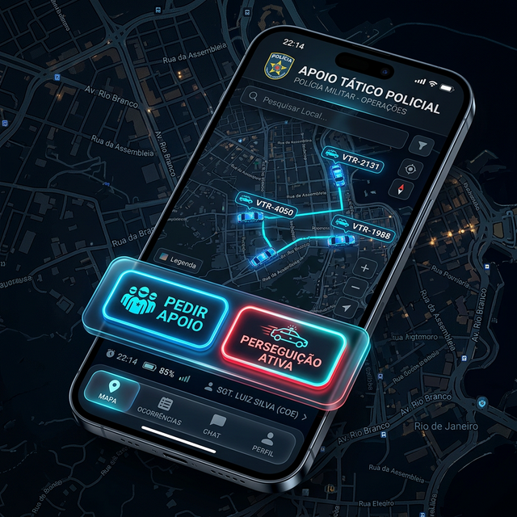

Consciência Situacional em Operações Táticas
Coordenação total de VTRs, visibilidade em tempo real e resposta imediata. O SuperAlpha transforma a perseguição em uma operação de interceptação coordenada.
Vantagens Operacionais
Tecnologia desenhada para quem está na linha de frente.
User
Friendly
Interface intuitiva projetada para operação sob estresse, garantindo rapidez no acesso às informações.
Alpha Sempre Visível
Saiba a localização exata de cada unidade Alpha a todo momento com atualização em tempo real.
Controle Total
Maior domínio tático durante perseguições e interceptações de alto risco.
Cercos e Bloqueios
Coordene perímetros de cerco e pontos de bloqueio com facilidade e precisão geográfica.
Ecossistema Integrado
Sincronia total entre o campo e o centro de comando.
Aplicação Móvel (VTR)
Instalada em tablets e dispositivos embarcados, permite coordenação tática pontual.

- Posicionamento de todas as unidades no mapa.
- Ativação de status de apoio/perseguição instantânea.
- Comunicação via rede tática integrada.
Aplicação Gerencial (Desktop)
Plataforma para Centros de Operações, com visão estratégica completa da malha.
- Gestão de batalhões, grupos e perímetros.
- Monitoramento panorâmico de múltiplas operações.
- Relatórios de performance e análise de dados.
Resposta Automática ao SOS
Acione o apoio imediato. O SuperAlpha traça instantaneamente a rota de socorro mais rápida para as VTRs mais próximas do ponto crítico.
Impacto Operacional
Resultados mensuráveis na ponta da linha.
Redução do Tempo de Resposta
Coordenação otimizada permite até 40% de redução no tempo de interceptação.
Segurança do Agente
Consciência situacional aprimorada reduz riscos durante o deslocamento tático.
Otimização de Recursos
Uso inteligente da frota evita desgaste desnecessário e maximiza a cobertura.
Coordenação Aprimorada
Comunicação visual facilita a formação de cercos e bloqueios multi-equipes.